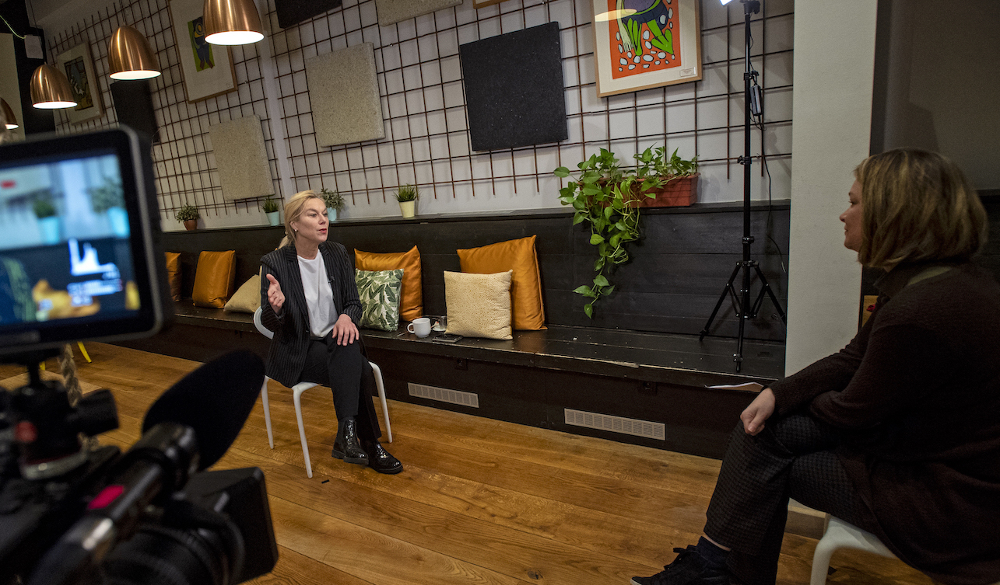

Een bijeenkomst, vergadering of evenement wordt beter met een goede dagvoorzitter. Ik zet mijn ervaring op dit vlak graag in om jouw evenement tot een succes te maken.
Ik zorg ervoor dat de sfeer optimaal is, de juiste mensen aan het woord komen (en het ook weer doorgeven) en de agenda wordt aangehouden. De aandacht ligt waar deze hoort: bij de boodschap van je evenement. Ook hier zet ik mijn stem in om jouw geluid te brengen.
Ben je op zoek naar een presentator voor een bedrijfsvideo of een (live) interview? Dat kan ik voor je verzorgen in een studio op locatie.

Foto : Marten van Dijl